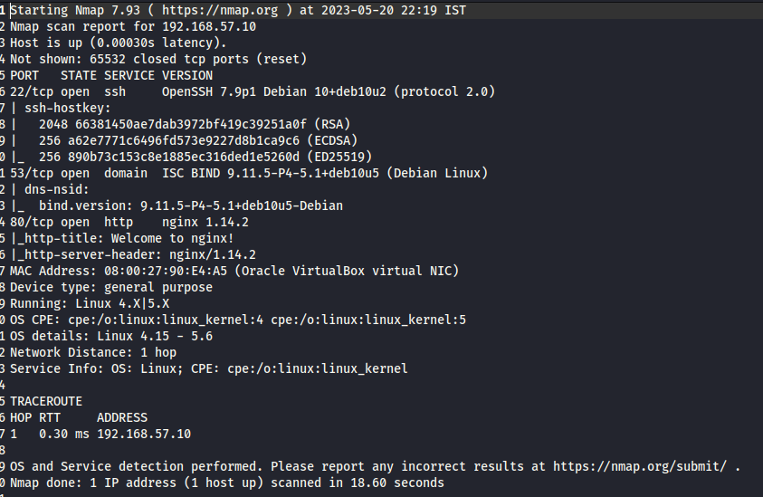

lolololololollloolollolooloololoo haahahhahahaahahah
port 53:DNS
#dnsrecon -r 127.0.0.0/24 -n <DNS to use> -d blah

-d:not need to provide anything but flag is necessary

add the dns to /etc/hosts

restart web browser and go to http://blackpearl.tcm
we get php info page


found a login page

google:navigate exploit(since its using navigate cms)
https://www.exploit-db.com/exploits/45561(this is using metasploit)

#use 3(in this case)


we have a shell but we dont see anything like username or machine(user@machineName) name like we normally see in linux
we need to generate a tty shell
#python -c 'import pty; pty.spawn("/bin/bash")'

now privilage escalatioon again:use linpeas


we are looking for red and yellow
SUID when 's' in owners rwx part:having this means we can run the file as same privilage as the owner of the file

SGID when 's' in group rwx part
and Sticky Bit when 's' in others rwx part
find all the files have SUID set

website:gtfobin->SUID
match the options under SUID of gtfobin from the files having SUID set shown in above image
eg:SUID is set for/php7.3 so check is php is an options or not in gtfobin under SUID


as proof of concept, cat /etc/shadow